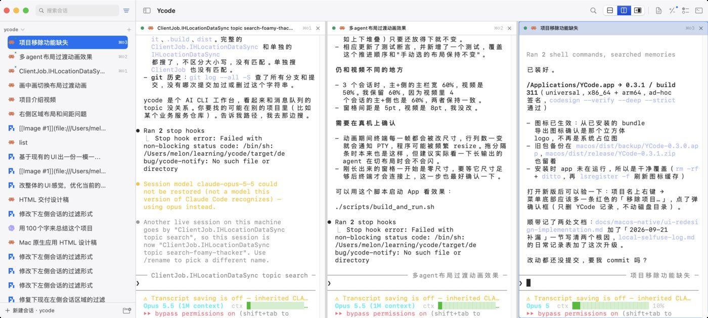
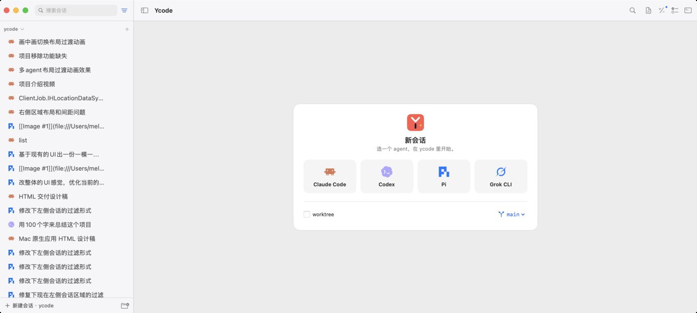

这份稿子只定「视觉气质」：配色、层次、窗格形态、焦点表达。布局结构与交互沿用 docs/ui-native-spec.html，不改功能。选定方向后，我会把结论并进 spec 的统一性规约，再改代码。
下面两张是当前开发版的实机截图。问题不在某个控件，而在整体没有「品牌」和「层次」。


#0b63e5：焦点框、选中行、分段控件全是蓝色。#ffffff，没有色温，像默认模板。三个方向都换成品牌色；区别在于窗格是「贴合」还是「浮起」，以及深色还是浅色优先。
卡片是打开 App 看到的第一屏，最值得打磨：agent 做成可点的卡片，带一行说明和快捷键，悬停时有珊瑚描边。
选一个 agent，在 ycode 里开始。
选一个 agent，在 ycode 里开始。
Color.accentColor：macOS 上它读系统强调色，不跟随 .tint。新增 Color.ycodeAccent / ycodeAccentText，全 App 替换。#efeef4。侧栏右缘那条细影是系统玻璃自带的，未去掉。#2f6fed：原来跟随系统蓝，改成珊瑚后会和 Claude 的橙色撞色。| 项 | 浅色 | 深色 | 说明 |
|---|---|---|---|
| 窗口底 | #efeef4 | #110f28 | 侧栏、顶栏融入底色，不画分隔线 |
| 卡片 / 终端底 | #fcfcfe | #1b1840 | 窗格、面板区卡片、新会话卡片共用 |
| 正文 / 次要文字 | #16133a / #6a6787 | #f1f0f8 / #8d89ad | 取代系统灰，带同一紫调 |
| 强调色 | #ff5a4e | #ff7d72 | 焦点、选中、主按钮；小字号上的文字用 #c3301f 保证对比度 |
| 终端光标 | #ff5a4e | #ffc83d | 深色下黄色光标更醒目 |
| 卡片形态 | 圆角 11px；间距 8px；阴影 0 1px 2px / 6% + 0 6px 18px -8px / 18% | 四档圆角里的 card 档从 10 调到 11，其余不变 | |
| 焦点 | 1px 珊瑚描边 + 3px 珊瑚光晕（16% 不透明度）；窗格头不再整条上色 | 焦点只有一种表达，全 App 统一 | |
| 选中行（侧栏） | 白底 + 1px 阴影 | #1f1c47 | 取代蓝色实心选中条 |
| 可访问性 | 正文对比度 15:1 以上，次要文字 ≥ 4.6:1（浅色 #6a6787、深色 #8d89ad）；珊瑚色 #ff5a4e 只用于描边和图形（3:1），不用于文字；焦点不只靠颜色（描边 + 光晕 + 窗格头文字加粗）；键盘焦点环沿用同一描边样式 | 尊重「减少透明度」时阴影、光晕退化为实线 | |